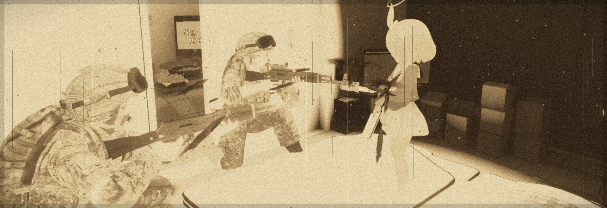

UMAEMON
umaemon1.
ゲーム作ったり、AIモデル回したり、PCいじったりしてます。最近はFactorioとFF14。
作品
- aegis2d 十三機兵の戦闘感だけを借りた2D防衛戦ゲーム 制作中
- うまえぽん Discordで動くGemma 4ボット 稼働中
- 画像生成パイプライン ローカルのComfyUI環境 稼働中
- 小物置き場 小ツールを生やしていく棚 これから
ゲーム
いま遊んでる
- Factorio: Space Age工場拡張中
- FF14gpose撮影
- WarzoneResurgence